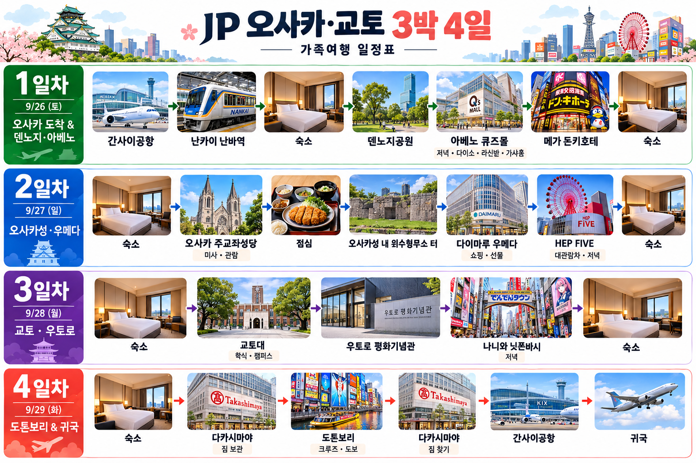

✏️ 수정 방법
수정모드에서 문장을 직접 고칠 수 있습니다. ➕ 큰 경로 추가로 이동구간을 만들고, 각 큰 경로에서 ➕ 이동수단 추가 / 🗑 큰 경로 삭제, 각 이동수단에서 ➕ 줄 추가와 줄 삭제가 가능합니다. 잘못 수정했으면 취소를 누르세요.
수정모드에서 문장을 직접 고칠 수 있습니다. ➕ 큰 경로 추가로 이동구간을 만들고, 각 큰 경로에서 ➕ 이동수단 추가 / 🗑 큰 경로 삭제, 각 이동수단에서 ➕ 줄 추가와 줄 삭제가 가능합니다. 잘못 수정했으면 취소를 누르세요.
🗺️ 3박 4일 전체 일정 한눈에 보기 ›
1~4일차 주요 방문지를 시간 순서대로 정리한 전체 일정 인포그래픽입니다.
이미지를 누르면 새 창에서 크게 볼 수 있습니다.

🔍 이미지를 누르면 크게 열립니다.
1일차9/26
간사이공항 → 숙소 → 덴노지 → 아베노 큐즈몰 → MEGA 돈키호테 → 숙소
간사이공항 T2 → 제1터미널 철도역 ›
- 제주항공에서 내려 입국심사와 수하물 수취를 마친다.
- 「無料連絡バス / Free Shuttle Bus」(무료 렌라쿠 바스 / 무료 연락버스) 표지판을 찾는다.
- Terminal 1 / Aeroplaza 방향 무료 셔틀버스 승강장으로 간다.
- T1행 무료 셔틀버스인지 확인한다.
- 캐리어 4개를 싣고 탑승한다.
- 약 7~10분 이동한다.
- 제1터미널·Aeroplaza 쪽에서 내린다.
- 「鉄道 / Railway」(테츠도 / 철도) 표지판을 찾는다.
- 「関西空港駅」(칸사이 쿠코 에키 / 간사이공항역) 방향으로 이동한다.
- 에스컬레이터 또는 엘리베이터를 이용한다.
- JR과 「南海 / NANKAI」(난카이) 표지판이 보이면 맞다.
- 다음 단계는 난카이 공항급행이다.
간사이공항역 → 난카이 난바역 ›
- 「南海 / NANKAI」(난카이) 개찰구로 간다.
- 전광판에서 「なんば / NAMBA」(난바)를 찾는다.
- 「空港急行 / Airport Express」(쿠코 큐코 / 공항급행)를 확인한다.
- 「ラピート / Rapi:t」(라피토)와 헷갈리지 않는다.
- ICOCA를 찍고 들어간다.
- 난바행 공항급행 승강장으로 간다.
- 열차 전광판에서 「なんば」(난바)를 다시 확인한다.
- 열차를 탄다.
- 난바는 종점이므로 중간에 내리지 않는다.
- 약 45~50분 이동한다.
- 「なんば」(난바)에서 내린다.
- 「中央改札口」(츄오 카이사츠구치 / 중앙 개찰구)를 찾는다.
- https://maps.app.goo.gl/8cxeE1ZYpDAZgvix7
난카이 난바역 → 숙소 ›
- 난카이 난바역에서 「中央改札口」(츄오 카이사츠구치 / 중앙 개찰구)로 나온다.
- 「地下鉄 / Osaka Metro」(치카테츠 / 지하철) 표지판을 찾는다.
- 빨간색 「御堂筋線」(미도스지센 / 미도스지선)을 따라간다.
- 「なんば M20」(난바 M20)을 확인한다.
- ICOCA를 찍고 개찰구로 들어간다.
- 「天王寺・なかもず方面」(텐노지·나카모즈 호멘)으로 간다.
- 열차를 탄다.
- 딱 1정거장 이동한다.
- 「大国町 M21」(다이코쿠초 M21)에서 내린다.
- 「5番出口」(고반 데구치 / 5번 출구) 방향으로 간다.
- 지상에서 「大国2丁目」(다이코쿠 니초메) 방향을 확인한다.
- 숙소 「エスリードホテル難波大国町アネックス」로 이동한다.
- https://maps.app.goo.gl/czCBb9XnvSBfWGMX6
- 난카이 난바역에서 지상 택시승강장 표지판을 찾는다.
- 캐리어 4개 때문에 일반 택시 1대로는 어렵다고 보고 2대를 이용한다.
- 두 기사에게 동일한 숙소 화면을 보여준다.
- 숙소명: 「エスリードホテル難波大国町アネックス」(에스리도 호텔 난바 다이코쿠초 아넥쿠스).
- 주소: 「大阪市浪速区大国2丁目1-7」(오사카시 나니와쿠 다이코쿠 니초메 1-7).
- 가족을 2명씩 나누고 각 차에 짐을 분산한다.
- 두 차량이 같은 목적지인지 다시 확인한다.
- 택시 번호 또는 차량 색을 서로 기억한다.
- 출발한다.
- 도착하면 숙소 간판을 확인한다.
- 각 택시 요금을 따로 결제한다.
- 가족 4명이 모두 도착했는지 확인한다.
숙소 → 덴노지공원 1919년 3월 19일 염상섭 등이 3·1운동에 호응해 조선인들에게 이곳 덴노지공원에 모일 것을 알렸던 역사 현장입니다. 경찰의 사전 검거로 집회는 성사되지 못했습니다. ›
- 숙소에서 「大国町駅 M21」(다이코쿠초 에키 M21)로 간다.
- 빨간색 「御堂筋線」(미도스지센)을 찾는다.
- 「天王寺・なかもず方面」(텐노지·나카모즈 호멘)으로 간다.
- 열차를 탄다.
- 「動物園前 M22」(도부츠엔마에 M22)를 지난다.
- 다음 「天王寺 M23」(텐노지 M23)에서 내린다.
- 「てんしば」(텐시바) 표지판을 찾는다.
- 「天王寺公園」(텐노지 코엔 / 덴노지공원) 표지도 확인한다.
- 출구 방향을 따라간다.
- 지상으로 나온다.
- 텐시바 잔디광장을 찾는다.
- 덴노지공원 일정 시작.
- 숙소에서 덴노지역 - https://maps.app.goo.gl/UyAp9ePeMS5Qekqx7
- 덴노지 역에서 공원 - https://maps.app.goo.gl/TRrFyqgToRxfqdv36
- 숙소 앞에서 택시를 잡는다.
- 목적지로 「てんしば / 天王寺公園」(텐시바 / 텐노지 코엔)을 보여준다.
- 기사에게 덴노지공원 텐시바 쪽 하차를 요청한다.
- 가족 4명이 한 차량에 탈 수 있는지 짐 없이 확인한다.
- 탑승한다.
- 도로 정체 여부를 확인한다.
- 텐시바 가까운 하차 지점을 요청한다.
- 도착하면 요금을 결제한다.
- 차에서 내린 뒤 가족이 모두 내렸는지 확인한다.
- 소지품을 확인한다.
- 「てんしば」 표지판을 찾는다.
- 공원 일정 시작.
덴노지공원 → 아베노 큐즈몰 ›
- 덴노지공원 「てんしば」(텐시바)에서 아베노 하루카스가 보이는 방향으로 나온다.
- 「天王寺駅」(텐노지 에키) 남쪽·아베노 방면 표지판을 따라간다.
- 큰 도로와 횡단보도에서는 「あべの」(아베노) 또는 「あべのキューズモール」 표지판을 확인한다.
- 「あべのハルカス」(아베노 하루카스)를 지나거나 맞은편으로 보면서 남서쪽 방향으로 이동한다.
- 보행자 통로 또는 횡단보도를 이용해 「阿倍野筋」(아베노스지) 방향으로 간다.
- 「あべのキューズモール」(아베노 큐즈모루 / 아베노 큐즈몰) 간판을 찾는다.
- 주소 「大阪市阿倍野区阿倍野筋1丁目6-1」(오사카시 아베노쿠 아베노스지 잇초메 6-1)을 확인한다.
- 큐즈몰 안으로 들어가 저녁식사와 다이소·라신반·가샤폰/#C-pla 일정을 진행한다.
- https://maps.app.goo.gl/4TNn4HWCNLdFML6r9
- 덴노지공원·텐시바 가까운 큰길의 택시 탑승 지점으로 이동한다.
- 기사에게 「あべのキューズモール」(아베노 큐즈모루)을 보여준다.
- 주소 「大阪市阿倍野区阿倍野筋1丁目6-1」을 함께 보여준다.
- 거리가 매우 짧으므로 도로 상황에 따라 도보보다 오래 걸릴 수 있다.
- 가족 4명이 함께 탑승한다.
- 큐즈몰 가까운 하차 지점에서 내린다.
- 요금을 결제하고 소지품을 확인한다.
- 큐즈몰 입구를 찾아 들어간다.
아베노 큐즈몰 → MEGA 돈키호테 신세카이점 ›
- 큐즈몰에서 쇼핑을 마친다.
- 건물 밖으로 나온다.
- 「新世界」(신세카이) 방향을 확인한다.
- 멀리 「通天閣」(츠텐카쿠)이 보이면 방향이 맞다.
- 텐노지공원 북쪽 방향으로 이동한다.
- 「動物園前」(도부츠엔마에) 표지판도 참고한다.
- 큰길에서는 횡단보도를 이용한다.
- 신세카이 상점가 쪽으로 이동한다.
- 「MEGAドン・キホーテ新世界店」(메가 돈키호테 신세카이텐) 표지판을 찾는다.
- 건물 입구를 확인한다.
- 가족이 함께 입장한다.
- 쇼핑을 시작한다.
- https://maps.app.goo.gl/74KzqTf7hd1ZefdKA
- 아베노 큐즈몰 택시 승강장 또는 큰길 택시 정차 지점으로 간다.
- 목적지 「MEGAドン・キホーテ新世界店」을 기사에게 보여준다.
- 필요하면 「新世界」(신세카이)라고 함께 보여준다.
- 가족 4명이 함께 탑승한다.
- 출발한다.
- 신세카이 방향으로 이동한다.
- 돈키호테 건물이 보이는지 확인한다.
- 가까운 하차 지점에서 내린다.
- 요금을 결제한다.
- 소지품을 확인한다.
- 건물 입구를 찾는다.
- 쇼핑을 시작한다.
MEGA 돈키호테 → 숙소 ›
- 돈키호테에서 나온다.
- 「動物園前駅」(도부츠엔마에 에키) 표지판을 찾는다.
- 빨간색 「御堂筋線」(미도스지센)을 찾는다.
- 역번호 M22를 확인한다.
- 개찰구로 들어간다.
- 「なんば・梅田方面」(난바·우메다 호멘)으로 간다.
- 열차를 탄다.
- 1정거장 이동한다.
- 「大国町 M21」(다이코쿠초 M21)에서 내린다.
- 5번 출구로 나온다.
- 「大国2丁目1-7」 방향으로 이동한다.
- 숙소에 도착한다.
- https://maps.app.goo.gl/qaudkeki6GbfX3YB6
- 돈키호테 쇼핑 후 짐 양을 확인한다.
- 짐이 많고 가족이 피곤하면 택시를 선택한다.
- 택시 승강장 또는 호출 가능한 지점으로 이동한다.
- 숙소명 「エスリードホテル難波大国町アネックス」를 보여준다.
- 주소 「大阪市浪速区大国2丁目1-7」를 함께 보여준다.
- 짐이 한 차량에 들어가는지 기사에게 확인한다.
- 안 들어가면 2대를 이용한다.
- 탑승한다.
- 숙소로 이동한다.
- 도착 후 요금을 결제한다.
- 쇼핑짐을 모두 내렸는지 확인한다.
- 숙소로 들어간다.
2일차9/27
성당 → sumigg's → 호코쿠 신사·구 육군 위수형무소터 → 한큐 우메다 → HEP FIVE → 숙소
숙소 → 오사카 주교좌성당 ›
- 숙소에서 JR 「今宮駅」(이마미야 에키 / 이마미야역)까지 약 7분 걷는다.
- 「East Exit」(이스트 엑시트 / 동쪽 출입구) 방향으로 들어간다.
- JR 「大阪環状線」(오사카 칸조센 / 오사카 순환선) 「内回り」(우치마와리 / 내선순환)를 확인한다.
- 타마츠쿠리 방면으로 가는 열차인지 전광판에서 확인하고 탑승한다.
- 「天王寺」(텐노지)에서 구글맵에 「탑승한 채로 이동(자동 환승)」이라고 표시되면 내리지 않고 그대로 탄다.
- 「寺田町」(테라다초) → 「桃谷」(모모다니) → 「鶴橋」(츠루하시)를 지나간다.
- 「玉造駅」(타마츠쿠리 에키 / 타마츠쿠리역)에서 내린다.
- 「1番出口」(이치반 데구치 / 1번 출구)를 찾아 나온다.
- 성당까지 약 13분(약 950m) 걷는다.
- 「カトリック玉造教会」(카토릭쿠 타마츠쿠리 쿄카이)를 찾는다.
- 주소 「大阪市中央区玉造2丁目24-22」(오사카시 츄오쿠 타마츠쿠리 니초메 24-22)를 확인한다.
- https://maps.app.goo.gl/DWG8spewQ7Bkoyf98
- 숙소에서 「大国町駅 M21」(다이코쿠초 에키 M21)로 간다.
- 빨간색 「御堂筋線」(미도스지센)을 찾는다.
- 「なんば・梅田方面」(난바·우메다 호멘) 열차를 탄다.
- 2정거장 이동해 「心斎橋 M19」(신사이바시 M19)에서 내린다.
- 「長堀鶴見緑地線 N15」(나가호리 츠루미료쿠치센 N15) 환승 표지판을 찾는다.
- 「門真南方面」(카도마미나미 호멘) 승강장으로 이동한다.
- 열차를 타고 「玉造 N19」(타마츠쿠리 N19)까지 이동한다.
- 타마츠쿠리역에서 내려 「1番出口」(이치반 데구치 / 1번 출구)를 찾는다.
- 1번 출구로 나온 뒤 성당까지 약 10~13분 걷는다.
- 「カトリック玉造教会」(카토릭쿠 타마츠쿠리 쿄카이)를 찾는다.
- 주소 「大阪市中央区玉造2丁目24-22」(오사카시 츄오쿠 타마츠쿠리 니초메 24-22)를 확인한다.
- 숙소 앞에서 택시를 잡는다.
- 목적지 「カトリック玉造教会」(카토릭쿠 타마츠쿠리 쿄카이)를 보여준다.
- 또는 「大阪高松カテドラル 聖マリア大聖堂」(오사카 타카마츠 카테도라루 세이 마리아 다이세이도)를 보여준다.
- 주소 「大阪市中央区玉造2丁目24-22」를 보여준다.
- 기사에게 목적지를 다시 확인한다.
- 가족 4명이 탑승한다.
- 차량 이동을 시작한다.
- 도로 정체가 있으면 시간이 늘어날 수 있음을 감안한다.
- 딸의 멀미 상태를 계속 확인한다.
- 성당 가까운 곳에서 하차한다.
- 요금을 결제한다.
- 성당 입구를 확인한다.
성당 → sumigg's ›
- 오사카 주교좌성당 「カトリック玉造教会」(카토릭쿠 타마츠쿠리 쿄카이) 정문에서 나온다.
- 성당 앞에서 「越中町筋」(엣츄마치스지) 방향을 확인한다.
- 「越中町筋」으로 약 25m 곧장 간다.
- 첫 번째 큰 갈림에서 우회전하여 계속 「越中町筋」으로 들어간다.
- 약 180m 직진한다. 오른쪽에 「越中公園」(엣츄 코엔 / 엣츄공원)이 보이면 길이 맞다.
- 공원 모서리를 지나면서 약간 오른쪽으로 꺾어 「佐官町通」(사칸마치도리)로 들어간다.
- 「佐官町通」을 약 60~70m 간다.
- 목적지 「sumigg's / スミッグス」(스미그스)는 진행 방향 기준 왼쪽에서 찾는다.
- 주소 「大阪市中央区森ノ宮中央2-10-7」(오사카시 츄오쿠 모리노미야츄오 2-10-7)을 확인한다.
- 길을 잃으면 「森ノ宮中央2-10-7」 주소를 주변 사람에게 보여준다.
- https://maps.app.goo.gl/TWNdjhCRmZD3GhTE9
- 성당 앞 큰길에서 택시를 잡는다.
- 기사에게 「スミッグス / sumigg's」와 주소 「大阪市中央区森ノ宮中央2-10-7」을 보여준다.
- 거리가 약 270m로 매우 가까우므로 승차 전 기사에게 목적지를 다시 확인한다.
- 도착 후 간판과 주소를 확인한다.
sumigg's → 호코쿠 신사·구 육군 위수형무소터 1932년 상하이 훙커우공원 의거 후 윤봉길 의사가 일본 오사카로 호송되어 수감되었던 위수형무소와 관련된 역사 현장입니다. 호코쿠 신사를 기준점으로 이치반 야구라 앞의 관련 안내판을 확인합니다. ›
- sumigg's에서 나와 북쪽의 「大阪城公園」(오사카조 코엔 / 오사카성공원) 방향으로 간다.
- 큰길을 건널 때 「大阪城公園」 또는 「豊國神社」(호코쿠 진자 / 호코쿠 신사) 표지를 찾는다.
- 공원 남쪽 입구 쪽으로 들어간다. 천수각을 목적지로 잡지 않는다.
- 공원 안에서는 「豊國神社」 표지판을 따라간다.
- 약 450m, 7분 정도 걸으면 「豊國神社」(호코쿠 신사) 입구가 나온다.
- 호코쿠 신사에서 관람을 마친 뒤 「一番櫓」(이치반 야구라 / 1번 망루) 방향을 찾는다.
- 이치반 야구라 앞쪽에서 「東大番頭小屋跡」(히가시 오반가시라 고야 아토) 안내판을 찾는다.
- 안내판에 함께 표시된 「衛戍監獄跡」(에이주 칸고쿠 아토 / 위수감옥 터) 내용을 확인한다.
- 표지판이 작을 수 있으므로 이치반 야구라 주변 안내판을 천천히 확인한다.
- 천수각까지 갈 필요는 없다. 관람 후 다음 이동을 위해 「大阪城公園駅」(오사카조코엔 에키 / 오사카성공원역) 방향 표지를 찾는다.
- https://maps.app.goo.gl/ACQW9thziEKfQot58
호코쿠 신사·구 육군 위수형무소터 → 한큐 우메다 본점 ›
- 위수형무소터 안내판 관람을 마친 뒤 공원 안에서 「大阪城公園駅」(오사카조코엔 에키 / 오사카성공원역) 표지를 찾는다.
- 공원 북동쪽의 「大阪城ホール」(오사카조 홀) 또는 「JO-TERRACE OSAKA」 방향으로 넓은 공원길을 따라간다.
- 천수각 안쪽으로 되돌아가지 말고 계속 「大阪城ホール / 大阪城公園駅」 표지를 따른다.
- JO-TERRACE OSAKA와 오사카성홀 부근에 도착하면 바로 옆의 JR 「大阪城公園駅」을 찾는다.
- ICOCA를 찍고 JR 개찰구로 들어간다.
- 「大阪環状線」(오사카 칸조센 / 오사카 순환선) 「京橋・大阪方面」(쿄바시·오사카 호멘)을 확인한다.
- 전광판에서 「大阪」(오사카)가 정차역에 표시된 열차를 탄다.
- 중간 역은 「京橋」(쿄바시) → 「桜ノ宮」(사쿠라노미야) → 「天満」(텐마) 순서로 확인한다.
- 다음 「大阪駅」(오사카역)에서 내린다.
- 오사카역에서 「御堂筋口」(미도스지구치 / 미도스지 개찰구) 또는 「南口」(미나미구치 / 남쪽 개찰구)를 찾는다.
- 개찰구를 나온 뒤 「阪急百貨店 / 阪急うめだ本店」(한큐 햣카텐 / 한큐 우메다 본점) 표지를 따라 동쪽으로 약 3분 걷는다.
- 목적지 「阪急うめだ本店」(한큐 우메다 혼텐), 주소 「大阪市北区角田町8-7」을 확인한다.
- 건물 안에서 지하 2층 「B2」로 내려간다.
- B2에서 「和洋酒 / Sake & Liquor」(와요슈 / 주류) 표지판을 찾아 일본주·양주 코너로 간다.
- https://maps.app.goo.gl/RmWmmwtccAMU8Yf47
- 오사카성공원 밖 차량이 다니는 큰길로 나온다.
- 택시 기사에게 「阪急うめだ本店」(한큐 우메다 혼텐)과 주소 「大阪市北区角田町8-7」을 보여준다.
- 한큐 우메다 본점 앞 또는 가까운 하차 지점에서 내린다.
- 건물 안으로 들어가 B2 「和洋酒 / Sake & Liquor」 코너로 이동한다.
한큐 우메다 본점 → HEP FIVE ›
- 한큐 우메다 본점 B2 주류코너에서 쇼핑을 마친다.
- 에스컬레이터 또는 엘리베이터로 1층으로 올라간다.
- 「阪急大阪梅田駅」(한큐 오사카우메다 에키) 또는 「HEP FIVE」 방향 표지판을 찾는다.
- 건물 밖으로 나오면 북쪽·북동쪽의 「阪急大阪梅田駅」 방향으로 이동한다.
- 큰 교차로와 보행자 통로에서는 계속 「HEP FIVE」 또는 「阪急」 표지를 따른다.
- 건물 위의 빨간 대관람차가 보이면 HEP FIVE 방향이 맞다.
- 약 300m, 7분 정도 이동한다.
- 주소 「大阪市北区角田町5-15」(오사카시 키타쿠 카쿠다초 5-15)를 확인한다.
- 「HEP FIVE」 간판과 빨간 대관람차를 확인하고 건물 안으로 들어간다.
- https://maps.app.goo.gl/LFh8EHxdVHRxZFho8
- 한큐 B2에서 원하는 술이 없으면 먼저 직원에게 재고를 한 번 확인한다.
- 그래도 없으면 1층으로 올라와 밖으로 나온다.
- 오프라인 상태에서 길을 단순하게 하기 위해 리커 마운틴까지는 택시 이용을 우선한다.
- 기사에게 「リカーマウンテン梅田店」(리카 마운텐 우메다텐)과 주소 「大阪市北区曽根崎新地1丁目10-1」을 보여준다.
- 리커 마운틴 우메다점에서 필요한 술을 구입한다.
- 구입 후 HEP FIVE까지는 도보 약 13분, 약 850m를 기준으로 한다.
- 매장에서 나와 「梅田」(우메다)·「大阪駅」(오사카역) 방향, 즉 북쪽으로 이동한다.
- 지하 또는 큰 교차로에서는 「東梅田」(히가시우메다) → 「阪急」(한큐) → 「HEP FIVE」 표지를 차례로 참고한다.
- 지상에서 빨간 대관람차가 보이면 그 방향으로 계속 걷는다.
- 「HEP FIVE」 주소 「大阪市北区角田町5-15」을 확인하고 입장한다.
HEP FIVE → 숙소 ›
- HEP FIVE에서 나온다.
- 「御堂筋線」(미도스지센) 표지판을 찾는다.
- 「梅田 M16」(우메다 M16)으로 간다.
- ICOCA를 찍고 들어간다.
- 「なんば・天王寺方面」(난바·텐노지 호멘) 열차를 탄다.
- 「淀屋橋 M17」(요도야바시)를 지난다.
- 「本町 M18」(혼마치)을 지난다.
- 「心斎橋 M19」(신사이바시)를 지난다.
- 「なんば M20」(난바)를 지난다.
- 다음 「大国町 M21」(다이코쿠초)에서 내린다.
- 5번 출구로 나온다.
- 숙소로 이동한다.
- https://maps.app.goo.gl/zRBpsXigfbKzPtKB8
- HEP FIVE 택시 승강장 또는 큰길로 이동한다.
- 숙소명 「エスリードホテル難波大国町アネックス」를 보여준다.
- 주소 「大阪市浪速区大国2丁目1-7」를 보여준다.
- 짐이 한 차량에 들어가는지 확인한다.
- 필요하면 2대를 이용한다.
- 가족을 나누어 탑승한다.
- 숙소로 출발한다.
- 딸의 멀미 상태를 확인한다.
- 숙소 근처에서 내린다.
- 요금을 결제한다.
- 쇼핑짐을 모두 챙긴다.
- 숙소로 들어간다.
3일차9/28
교토대 → 우토로 평화기념관 → 나니와 닛폰바시 식당 → 숙소
숙소 → JR 오사카역 ›
- 숙소에서 「大国町 M21」(다이코쿠초 M21)로 간다.
- 빨간색 「御堂筋線」(미도스지센)을 찾는다.
- 「梅田・新大阪方面」(우메다·신오사카 호멘)으로 간다.
- 열차를 탄다.
- 「なんば M20」(난바)를 지난다.
- 「心斎橋 M19」(신사이바시)를 지난다.
- 「本町 M18」(혼마치)을 지난다.
- 「淀屋橋 M17」(요도야바시)을 지난다.
- 「梅田 M16」(우메다 M16)에서 내린다.
- 「JR大阪駅」(JR 오사카 에키) 표지판을 찾는다.
- 표지판을 따라 이동한다.
- JR 오사카역에 도착한다.
- https://maps.app.goo.gl/eeUKer2Gi87yRqEL6
JR 오사카역 → JR 교토역 ›
- JR 오사카역에 들어간다.
- 전광판에서 「京都」(교토)를 찾는다.
- 「JR京都線」(JR 교토센)을 확인한다.
- 가능하면 「新快速」(신카이소쿠 / 신쾌속)을 선택한다.
- 교토 방면 승강장으로 이동한다.
- 열차 전광판에 京都가 포함되어 있는지 확인한다.
- 열차를 탄다.
- 약 30분 정도 이동한다.
- 「京都」(교토) 안내방송이 나오면 준비한다.
- JR 교토역에서 내린다.
- 「烏丸口」(카라스마구치) 방향으로 이동한다.
- 개찰구 밖으로 나온다.
- https://maps.app.goo.gl/eeUKer2Gi87yRqEL6
교토역 → 교토대 정문 ›
- 교토역에서 「烏丸口」(카라스마구치)로 나온다.
- 교토타워가 보이면 북쪽이 맞다.
- 버스터미널의 D2 승강장을 찾는다.
- 「206」 버스를 확인한다.
-
「北大路バスターミナル方面」(기타오지 바스타미나루 호멘 / 기타오지 버스터미널 방면)인지 확인한다. -
버스 앞 전광판에서
206과祇園・東山通(기온·히가시야마도리) 표기를 확인한다. - ICOCA를 준비한다.
- 206번 버스에 탄다.
- 딸의 상태를 보고 가능한 한 흔들림이 덜한 자리에 앉는다.
-
안내방송에서
「京大正門前」(교다이 세이몬마에)가 나오면 하차 준비한다. - 정류장 벨을 확인한다.
-
「京大正門前」(교다이 세이몬마에)에서 내린다. - https://maps.app.goo.gl/eeUKer2Gi87yRqEL6
- 교토역 「烏丸口」(카라스마구치) 쪽 택시승강장으로 간다.
- 기사에게 「京都大学 正門」(쿄토 다이가쿠 세이몬 / 교토대 정문)을 보여준다.
- 가능하면 「京大正門前」(쿄다이 세이몬마에)라고도 보여준다.
- 목적지를 다시 확인한다.
- 가족 4명이 탑승한다.
- 출발한다.
- 딸의 멀미 상태를 확인한다.
- 차량 멀미가 심해지면 창문 환기 가능 여부를 확인한다.
- 교토대 정문 근처에서 내릴 준비를 한다.
- 요금을 결제한다.
- 소지품을 확인한다.
- 교토대 정문으로 이동한다.
교토대 캠퍼스 투어 → 중앙식당 교토대 정문에서 시작해 시계탑과 본부 캠퍼스를 약 30~40분 둘러본 뒤 중앙식당에서 학식을 먹는 코스입니다. ›
- 「京大正門前」(교다이 세이몬마에 / 교토대 정문 앞)에서 206번 버스를 내린다.
- 「京都大学 正門」(쿄토 다이가쿠 세이몬 / 교토대학교 정문) 표지를 찾아 정문으로 들어간다.
- 정문을 지나 정면 쪽의 큰 시계탑 건물 「百周年時計台記念館」(햐쿠슈넨 토케이다이 키넨칸 / 백주년 시계탑 기념관)으로 이동한다.
- 시계탑 앞 광장에서 교토대 대표 전경을 보고 사진을 찍는다.
- 광장 주변의 큰 「楠」(쿠스노키 / 녹나무)도 함께 본다.
- 시계탑 주변의 「法経済学部本館」(호케이자이가쿠부 혼칸 / 법·경제학부 본관) 등 본부 캠퍼스 건물을 천천히 둘러본다.
- 본부 캠퍼스 안쪽으로 조금 더 걸으며 강의동과 학생 생활 공간을 구경한다.
- 너무 멀리 가지 말고 시계탑을 기준점으로 삼아 이동한다.
- 캠퍼스 투어는 약 30~40분 정도로 잡는다.
- 투어가 끝나면 「中央食堂」(츄오 쇼쿠도 / 중앙식당) 표지를 찾는다.
- 중앙식당이 있는 본부 캠퍼스 쪽으로 이동한다.
- 「中央食堂」(츄오 쇼쿠도 / 중앙식당)에 도착하면 점심 식사를 한다.
교토대 → 교토역 ›
- 「京大正門前」(쿄다이 세이몬마에) 정류장으로 간다.
- 버스 번호 206을 확인한다.
- 이번에는 「京都駅」(교토 에키) 방향인지 반드시 확인한다.
- 버스 앞 전광판에 京都駅이 있는지 확인한다.
- ICOCA를 준비한다.
- 206번 버스를 탄다.
- 딸의 멀미 상태를 확인한다.
- 교토역까지 이동한다.
- 「京都駅前」(교토 에키마에) 안내를 기다린다.
- 교토역 앞에서 내린다.
- 역 건물로 들어간다.
- 「近鉄」(킨테츠) 표지판을 찾는다.
- https://maps.app.goo.gl/XZ8DpxY4At5qAvbJ6
- 교토대 정문 근처에서 택시를 잡는다.
- 목적지 「近鉄京都駅」(킨테츠 교토 에키)을 보여준다.
- 또는 「京都駅」(교토 에키)이라고 보여준다.
- 가족 4명이 탑승한다.
- 출발한다.
- 딸의 상태를 확인한다.
- 교토역 방향으로 이동한다.
- 교토역 근처 정체를 감안한다.
- 긴테쓰 교토역과 가까운 하차 지점을 요청한다.
- 요금을 결제한다.
- 역 안으로 들어간다.
- 「近鉄」 표지판을 찾는다.
긴테쓰 교토역 → 이세다역 ›
- 「近鉄京都駅」(킨테츠 교토 에키) 개찰구로 간다.
- 목적지는 「伊勢田」(이세다)이다.
- 전광판에서 伊勢田 정차 여부를 확인한다.
- 잘 모르겠으면 「伊勢田駅に行きたいです。」(이세다 에키니 이키타이데스)를 보여준다.
- ICOCA를 찍고 들어간다.
- 해당 승강장으로 이동한다.
- 열차를 탄다.
- 역 이름을 계속 확인한다.
- 「伊勢田」(이세다) 안내방송이 나오면 내릴 준비를 한다.
- 이세다역에서 내린다.
- 개찰구로 이동한다.
- 「出口2」(데구치 니 / 2번 출구)를 찾는다.
- https://maps.app.goo.gl/j7JbFGxtohmkb6ks5
이세다역 → 우토로 평화기념관 우토로는 1940년부터 교토비행장 건설에 동원된 조선인 노동자들의 숙소 터에서 형성된 마을입니다. 평화기념관은 그 역사와 주민들의 삶, 인권·평화의 의미를 전하는 공간입니다. ›
- 이세다역 「2番出口」(니반 데구치 / 2번 출구)로 나온다.
- 출구에서 오른쪽, 서쪽으로 간다.
- 완만한 내리막길을 내려간다.
- 「のせ園」(노세엔)에 도착하기 전에 왼쪽으로 돈다.
- 그대로 직진한다.
- 작은 수로가 나올 때까지 간다.
- 수로를 건너 남쪽 편으로 이동한다.
- 「西宇治中学校」(니시우지 츄갓코)를 찾는다.
- 학교 앞에서 오른쪽으로 돈다.
- 그대로 직진한다.
- 「ウトロ平和祈念館」(우토로 헤이와 키넨칸)을 찾는다.
- 주소 「京都府宇治市伊勢田町ウトロ51-43」을 확인한다.
- https://maps.app.goo.gl/BdiC4ZegVPVDcydi8
- 이세다역 밖에서 택시를 잡는다.
- 목적지 「ウトロ平和祈念館」(우토로 헤이와 키넨칸)을 보여준다.
- 주소 「京都府宇治市伊勢田町ウトロ51-43」를 보여준다.
- 짧은 거리임을 감안한다.
- 가족 4명이 탑승한다.
- 출발한다.
- 딸의 상태를 확인한다.
- 기념관 근처에서 내린다.
- 요금을 결제한다.
- 소지품을 확인한다.
- 기념관 간판을 찾는다.
- 관람을 시작한다.
우토로 → 긴테쓰닛폰바시 ›
- 우토로에서 왔던 길을 따라 「伊勢田駅」(이세다 에키)로 돌아간다.
- 이세다역에서 「大和西大寺」(야마토사이다이지) 방향 열차를 확인한다.
- 전광판에서 정차역을 확인한다.
- 열차를 탄다.
- 「大和西大寺」(야마토사이다이지)에서 내린다.
- 「大阪難波方面」(오사카난바 호멘) 표지판을 찾는다.
- 「近鉄奈良線」(킨테츠 나라센)으로 환승한다.
- 오사카난바 방향 열차를 탄다.
- 「近鉄日本橋」(킨테츠 닛폰바시) 안내를 확인한다.
- 긴테쓰닛폰바시역에서 내린다.
- 「10番出口」(쥬반 데구치 / 10번 출구) 방향으로 간다.
- 나니와 닛폰바시 식당으로 이동한다.
- https://maps.app.goo.gl/MzoY4nPiLn5ocT5K9
- 나니와 닛폰바시 식당 - https://maps.app.goo.gl/WXPENTp29c8VKgk87
나니와 닛폰바시 식당 → 숙소 ›
- 식당에서 나온다.
- 「なんば駅」(난바 에키) 방향으로 서쪽으로 걸어간다.
- 큰길인 「千日前通」(센니치마에도리 / 센니치마에 거리)을 따라 난바 방향으로 이동한다.
- 「Osaka Metro なんば駅」(오사카 메트로 난바 에키) 또는 빨간색 「御堂筋線」(미도스지센) 표지판을 찾는다.
- 「なんば M20」(난바 M20) 개찰구로 들어간다.
- 「天王寺・なかもず方面」(텐노지·나카모즈 호멘) 승강장으로 간다.
- 미도스지선 열차를 탄다.
- 딱 1정거장 이동한다.
- 「大国町 M21」(다이코쿠초 M21)에서 내린다.
- 「5番出口」(고반 데구치 / 5번 출구) 방향으로 간다.
- 5번 출구로 나와 「大国2丁目」(다이코쿠 니초메) 방향으로 약 5분 걷는다.
- 숙소 「エスリードホテル難波大国町アネックス」(에스리도 호텔 난바 다이코쿠초 아넥쿠스)에 도착한다.
- https://maps.app.goo.gl/XHz7yfWC28nT3U3N8
- 식당에서 나온다.
- 큰길에서 택시를 잡는다.
- 숙소명 「エスリードホテル難波大国町アネックス」를 보여준다.
- 주소 「大阪市浪速区大国2丁目1-7」를 보여준다.
- 가족 4명이 탑승한다.
- 출발한다.
- 딸의 멀미 상태를 확인한다.
- 숙소 방향으로 이동한다.
- 숙소 근처에서 내린다.
- 요금을 결제한다.
- 소지품을 확인한다.
- 숙소로 들어간다.
4일차9/29
다카시마야 → 도톤보리 → 짐 찾기 → 간사이공항 T2
숙소 → 다카시마야 오사카점 ›
- 체크아웃하고 캐리어 4개를 챙긴다.
- 숙소에서 「大国町 M21」(다이코쿠초 M21)로 간다.
- 「御堂筋線」(미도스지센)을 찾는다.
- 「なんば・梅田方面」(난바·우메다 호멘)으로 간다.
- 열차를 탄다.
- 1정거장 이동한다.
- 「なんば M20」(난바 M20)에서 내린다.
- 「4番出口」(욘반 데구치 / 4번 출구) 방향을 찾는다.
- 「高島屋」(타카시마야) 표지판을 확인한다.
- 「南海電車」(난카이 덴샤) 표지도 함께 확인한다.
- 다카시마야 오사카점으로 들어간다.
- 7층 짐 보관 장소로 이동한다.
- https://maps.app.goo.gl/qwt1XNeZUJTK1xrf7
- 숙소에서 체크아웃한다.
- 캐리어 4개를 모두 챙긴다.
- 숙소 앞에서 택시를 잡는다.
- 일반 택시 1대에 캐리어 4개가 어렵다고 보고 2대를 이용한다.
- 목적지 「高島屋大阪店」(타카시마야 오사카텐)을 보여준다.
- 가족을 2명씩 나누고 짐도 분산한다.
- 두 기사에게 같은 목적지를 확인한다.
- 두 차량이 출발한다.
- 난바 다카시마야 쪽으로 이동한다.
- 도착하면 각 차량 요금을 결제한다.
- 짐 4개를 모두 내렸는지 확인한다.
- 다카시마야로 들어간다.
다카시마야 → 도톤보리 리버크루즈 ›
- 다카시마야에서 나온다.
- 「戎橋筋」(에비스바시스지) 상점가 방향을 찾는다.
- 북쪽으로 계속 걷는다.
- 상점가를 따라 직진한다.
- 「道頓堀」(도톤보리) 표지판을 찾는다.
- 강이 나오면 도톤보리강이다.
- 「戎橋」(에비스바시)와 글리코 사인을 확인한다.
- 강변 「とんぼりリバーウォーク」(톤보리 리바 워쿠)로 내려간다.
- 「ドン・キホーテ道頓堀店」(돈키호테 도톤보리텐)을 찾는다.
- 노란 타원형 관람차가 있는 건물인지 확인한다.
- 강변 승선 접수처를 찾는다.
- 「太左衛門橋船着場」(타자에몬바시 후나츠키바)에서 탑승한다.
- https://maps.app.goo.gl/x77X6Z4zdKGbizFu6
- 다카시마야 앞에서 택시를 잡는다.
- 목적지 「道頓堀」(도톤보리)를 보여준다.
- 가능하면 「ドン・キホーテ道頓堀店」을 함께 보여준다.
- 가족 4명이 탑승한다.
- 출발한다.
- 도톤보리 쪽으로 이동한다.
- 가까운 하차 지점을 요청한다.
- 요금을 결제한다.
- 도톤보리강을 찾는다.
- 돈키호테 건물을 찾는다.
- 강변 승선 접수처를 찾는다.
- 리버크루즈 승선 준비를 한다.
난카이 난바역 → 간사이공항역 ›
- 다카시마야에서 짐을 찾는다.
- 「南海なんば駅」(난카이 난바 에키) 표지판을 찾는다.
- 난카이 개찰구로 이동한다.
- 목적지 「関西空港」(칸사이 쿠코)를 확인한다.
- 전광판에서 「空港急行」(쿠코 큐코 / 공항급행)을 찾는다.
- 「関西空港行き」(칸사이 쿠코 유키 / 간사이공항행)인지 확인한다.
- ICOCA를 찍고 들어간다.
- 공항급행 승강장으로 간다.
- 열차를 탄다.
- 약 45~50분 이동한다.
- 「関西空港」(칸사이 쿠코)에서 내린다.
- 개찰구로 나온다.
- https://maps.app.goo.gl/5HyoY2D9LPSP6Yp46
간사이공항역 → 제2터미널 ›
- 간사이공항역 개찰구를 나온다.
- 「Aeroplaza / エアロプラザ」(에아로 프라자) 방향을 찾는다.
- 「第2ターミナル」(다이니 타미나루 / 제2터미널) 표시를 따라간다.
- 「無料連絡バス」(무료 렌라쿠 바스) 승강장을 찾는다.
- T2행 무료 셔틀인지 확인한다.
- 캐리어 4개를 싣고 탑승한다.
- 약 7~10분 이동한다.
- 제2터미널에서 내린다.
- 「出発 / Departures」(슛파츠 / 출발) 표지판을 찾는다.
- 제주항공 체크인 카운터를 찾는다.
- 여권·예약번호·수하물을 준비한다.
- 체크인을 진행한다.
주요 목적지
길을 잃었을 때 이 화면을 역무원·택시기사·편의점 직원에게 그대로 보여주세요.
숙소
エスリードホテル難波大国町アネックス
에스리도 호텔 난바 다이코쿠초 아넥쿠스
大阪市浪速区大国2丁目1-7
오사카시 나니와쿠 다이코쿠 니초메 1-7
오사카 주교좌성당
大阪高松カテドラル 聖マリア大聖堂 / カトリック玉造教会
오사카 타카마츠 카테도라루 세이 마리아 다이세이도 / 카토릭쿠 타마츠쿠리 쿄카이
大阪市中央区玉造2丁目24-22
오사카시 츄오쿠 타마츠쿠리 니초메 24-22
리커 마운틴 우메다점
リカーマウンテン梅田店
리카 마운텐 우메다텐
大阪市北区曽根崎新地1丁目10-1
오사카시 키타쿠 소네자키신치 잇초메 10-1
HEP FIVE
HEP FIVE
헵 파이브
大阪市北区角田町5-15
오사카시 키타쿠 카쿠다초 5-15
우토로 평화기념관
ウトロ平和祈念館
우토로 헤이와 키넨칸 / 우토로 평화기념관
京都府宇治市伊勢田町ウトロ51-43
쿄토후 우지시 이세다초 우토로 51-43
나니와 닛폰바시 식당
なにわ日本橋食堂
나니와 닛폰바시 쇼쿠도
大阪府大阪市中央区日本橋1丁目17-20
오사카후 오사카시 츄오쿠 닛폰바시 잇초메 17-20
🛍 쇼핑 · 선물 체크
살 것은 현장에서 체크하고, 귀국 후 선물 전달까지 한 화면에서 관리합니다.
🍽 식사 정보
확정·후보 식당은 일차별로 관리하고, 실제 이용 금액과 가족별 식사를 기록합니다.
🚇 교통비 기록
지하철·JR·버스·택시 등 실제 사용한 교통비를 일차별로 기록합니다. 합계는 예산 탭에 자동 반영됩니다.
실제 교통비 합계¥0
원화 환산₩0
💳 ICOCA 이용 가이드 보기 ›
➕ 교통비 추가
🧳 여행 준비물
가족 4명 기준 · 준비 완료와 실제 짐에 넣었는지를 따로 확인합니다. 비용은 예산 탭에 자동 반영됩니다.
준비 완료0 / 0
짐싸기 완료0 / 0
구매비 합계₩0
총 항목0개
준비 = 구매·예약·확인까지 끝난 상태 · 짐 = 실제 캐리어/휴대가방에 넣은 상태
여권·항공권·보험처럼 구매할 필요가 없는 항목도 준비 완료 체크를 사용합니다.
여권·항공권·보험처럼 구매할 필요가 없는 항목도 준비 완료 체크를 사용합니다.
➕ 준비물 추가
💳 여행 예산 · 지출 요약
계획한 돈 → 실제로 쓴 돈 → 남은 돈을 한눈에 확인합니다.
공통 적용 환율
1엔 = 원
쇼핑·선물 / 식사 / 예산에서 같은 환율을 사용합니다.
계획 하한
₩0
¥0 + 항공권
계획 상한
₩0
¥0 + 항공권
현재 실제지출
₩0
입력·체크된 금액 기준
상한 기준 남은 예산
₩0
계획 상한 대비
지출 진행률 0%
상한 예산 기준
구분
계획
실제
비고
상태
✈️ 항공권
₩1,773,950제주항공 ICN T1 ↔ KIX T2
원
원화로 결제 완료.
결제완료
🏨 숙소
¥28,500₩0
엔
₩0
에스리드 호텔 난바 다이코쿠초 아넥스 · 숙박비 ¥28,500 · 숙박세 0엔.
미입력
🚇 현지 교통
¥60,000 ~ 80,000₩0 ~ ₩0
¥0
₩0
교통비 탭에서 입력한 실제 금액을 자동 합산합니다.
자동연동
🍽 식비
¥106,000 ~ 159,000₩0 ~ ₩0
¥0
₩0
식사 탭에서 ‘이용’ 체크한 실제 금액을 자동 합산합니다.
자동연동
🎟 입장·관람
¥5,000 ~ 8,000₩0 ~ ₩0
엔
₩0
우토로 평화기념관, HEP FIVE 대관람차 등. 오사카성 천수각 내부 입장 제외.
미입력
🎁 쇼핑·선물
¥130,000 ~ 150,000₩0 ~ ₩0
¥0
₩0
쇼핑·선물 탭에서 구매 체크한 실구매 금액을 자동 합산합니다.
자동연동
📱 eSIM·준비물
국내 구매별도 계획금액 없음
₩0
준비물 탭에 입력한 실제 구매비용을 자동 합산합니다.
자동연동
📌 예산 산정 메모 펼치기
현지 교통 · 1일차 난카이 공항급행, 2일차 일부 택시/현장 선택, 4일차 다카시마야 이동 등 여유분 포함.
식비 · 인천공항 식사, 마트, 1~4일차 점심·저녁, 간식 포함.
쇼핑·선물 · 다카시마야, 다이소, 가챠, 피규어, 의약품, 간식 선물 포함.
원화 합계 · 항공권은 원화 고정, 나머지 엔화 계획은 위 공통 환율로 자동 환산됩니다.
식비 · 인천공항 식사, 마트, 1~4일차 점심·저녁, 간식 포함.
쇼핑·선물 · 다카시마야, 다이소, 가챠, 피규어, 의약품, 간식 선물 포함.
원화 합계 · 항공권은 원화 고정, 나머지 엔화 계획은 위 공통 환율로 자동 환산됩니다.
※ 이 파일은 외부 지도·글꼴·인터넷을 사용하지 않아 오프라인에서도 내용을 볼 수 있습니다.